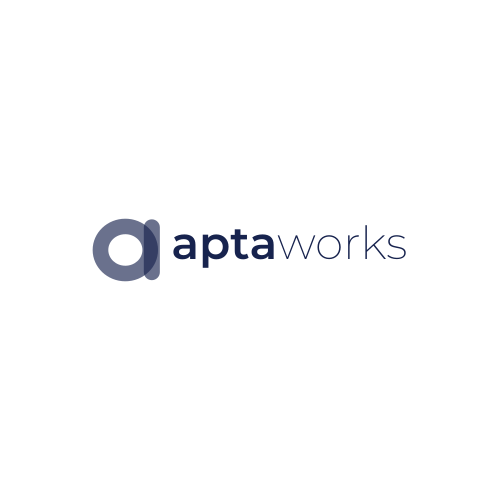

Editorial Grid / 2026Practical decks with editorial precision.
Apta identity stays corporate and credible; the composition becomes sharper, gridded, and less generic.
Use ledger rows instead of stacked AI-looking cards.
Hijau
Sering pakai AI hampir setiap hari. Anda bisa jadi buddy saat praktik.
Kuning
Pernah coba 1-2 kali. Hari ini kita perkuat cara pakainya.
Merah
Belum pernah atau baru tahu hari ini. Kita mulai dari nol bersama.
Dense proof feels more credible when it follows a visible grid.
From corporate to considered.
Dark slides remain Apta navy, but the layout borrows editorial tension from cobalt-grid.
Process slides should read like a clean map, not a feature-card row.
Diagnose
Map context, users, constraints, and what success looks like.
Design
Turn goals into modules, exercises, prompts, and output formats.
Deliver
Run guided practice with tight facilitator notes and visible examples.
Adopt
Close with routines, action plans, and follow-up prompts.
Choose the component by information shape.
Use ledger rows
For levels, options, agenda items, exercise groups, and comparison lists. This avoids the generic stacked-card look.
Use proof grids
For metrics, clients, capability summaries, handout mappings, and any content that benefits from dense scanning.
Maximize your operational efficiency and business growth with Aptaworks' cutting-edge data solutions.
Get a consultation with our experts at